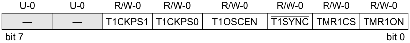

Episódio 15: Conhecendo a interrupção por estouro em Timer1 (registradores TMR1H, TMR1L e T1CON de 8 bits) de 16 bits no PIC16F628A
Voltar ao índice
Voltar ao Episódio 14
Ir para Episódio 16
Neste episodio veremos o uso do modulo Timer1 como contador/temporizador de 16 bits e sua interrupção associada.
O processo de configuraçã do modulo é semelante ao TImer0, sendo tratado pelo registrador T1CON (Timer1 Control Register).
A configuração é feita pelo registrador T1CON e pelos bits: T1CKPS1, T1CKPS0, T1SYNC, TMR1CS e TMR1ON, e a Figura 15.1 exibe o registrador T1CON.
|
Figura 15.1 - Registrador T1CON e seus bits
|
|

|
|
Fonte: Próprio autor (2020)
|
O bit TMR1ON será configurado com 1 se quisermos ativar o modulo Timer1, e com 0 se quisermos parar a atuação do Timer1.
Já o bit TMR1CS seleciona a fonte de incremento, onde se esse bit tiver o valor igual a 1, a fonte será externa no pino RB6/T1OSO/T1CKI/PGC na borda de subida, enquanto se esse bit for 0, a fonte advém do clock interno (Fosc/ 4).
Os bits T1CKP1 e T1CKP0 selecionam a taxa do Prescaler, onde pode-se ver os valores conforme Tabela 15.1.
|
Tabela 15.1 - Tabela com combinação de taxas de incremento
|
| T1CKP1 |
T1CKP0 |
VALOR PRESCALER |
| 0 |
0 |
1:1 |
| 0 |
1 |
1:2 |
| 1 |
0 |
1:4 |
| 1 |
1 |
1:8 |
|
|
Fonte: Próprio autor (2021)
|
Agora o bit T1OSCEN é utilizado para ativaçã de uso de clock externo nos pinos RB6/T1OSO e RB7/T1OSI ou não. Se esse bit for igual a 1 está ativado o uso do oscilador e 0 caso o contrário.
Por ultimo temos o bit T1SYNC reponsavel pelo controle de sincronização de entrada do clock externo do Timer1. Assim, se TMR1CS = 1, isto é, faz-se uso de clock externo, então:
-
T1SYNC = 1, se não quer sincronizar com o clock externo de entrada;
-
T1SYNC = 0, se quer sincronizar com o clock externo de entrada.
Porem se TMR1CS = 0, T1SYNC é ignorado, pois Timer1 faz uso do clock interno.
Após as devidas configurações dos bits anterioes, pode-se a configuração dos dois registradores que compoem os 16 bits do Timer1, os registradores TMR1H e TMR1L, onde TMR1H são os 8 bits mais significativos e TMR1L são os 8 bits menos sifnigicativos do número de 16 bits, sendo que este numero começa em 0x0000 (0) até 0xFFFF (65535), sendo que pode ser atribuido Prescaler para aumentar o intervalo de contagem ou temporaizador.
COLOCAR EXEMPLO SEMELHANTE AO DO TIMER0, QUE NO CASO SERIA UMA CONTAGEM MAIOR PELO REGISTRADOR DE 16 BITS
|
Código 15.1 - Código do exemplo de uso da interrupção do Timer1
|
; CONFIGURACOES INICIAS
; D:\Program Files (x86)\Microchip\MPLABX\v5.30\mpasmx\p16f628a.inc
; D:\Program Files (x86)\Microchip\xc8\v2.10\mpasmx\p16f628a.inc
#INCLUDE <P16F628A.INC>
LIST P=16F628A
; REGISTER 14-1: CONFIGURATION WORD REGISTER
; CP: Flash Program Memory Code Protection bit
; LVP: Low-Voltage Programming Enable bit
; BOREN: Brown-out Reset Enable bit
; MCLRE: RA5/MCLR/V PP Pin Function Select bit
; PWRTE: Power-up Timer Enable bit
; WDTE: Watchdog Timer Enable bit
; XT: Max 4 MHz crystal
__CONFIG _BODEN_ON & _MCLRE_ON & _LVP_OFF & _WDT_OFF & INTOSC & _CP_OFF & _PWRTE_ON
#DEFINE W_TEMP 0x20
#DEFINE STATUS_TEMP 0x21
ORG 0x00 ; TRATAMENTO DO RESET
GOTO INICIAPARAMETROS
ORG 0x04 ; TRATAMENTO DAS INTERRUPCOES
MOVWF W_TEMP
SWAPF STATUS, 0
MOVWF STATUS_TEMP
BTFSS PIR1, TMR1IF ; INTERRUPCAO DOS PERIFERICOS (TIMER 1 - SECAO 7.0)
GOTO SAIDA_INTERRUPCAO
BCF PIR1, TMR1IF
;
; LINHAS PARA TRATAMENTO DA INTERRUPCAO
;
SAIDA_INTERRUPCAO:
SWAPF STATUS_TEMP, 0
MOVWF STATUS
MOVF W_TEMP, 0
RETFIE
INICIAPARAMETROS:
BCF STATUS, RP1
BSF STATUS, RP0 ; SELECIONA O BANCO 1 DE MEMORIA
MOVLW B'10000000' ; CONFIGURACOES DO REGISTRADOR OPTION
; 1 - 'RBPU -> DESATIVA RESISTORES PULL-UP
; 0 - INTDEG -> INT. ATIV. BORDA DE DESCIDA RB0
; 0 - TOCS -> O CLOCK DO TIMER 0 EH INTERNO
; 0 - TOSE -> BORDA DE SUBIDA NO TIMER 0, RA4
;(0)- PSA -> PRESCALER ASSOCIADO AO TIMER 0
;(1) -> PRESCALER ASSOCIADO AO WDT
MOVWF OPTION_REG ; 0 - PS2,PS1,PS0 -> TIMER 0 COM RAZAO 1:1
MOVLW B'11111111' ; CONFIGURAÇÕES DO TRISA
; 0 - PINO RA7 COMO ENTRADA
; 0 - PINO RA6 COMO ENTRADA
; 0 - PINO RA5 COMO ENTRADA
; 1 - PINO RA4 COMO ENTRADA
; 1 - PINO RA3 COMO ENTRADA
; 1 - PINO RA2 COMO ENTRADA
; 1 - PINO RA1 COMO ENTRADA
; 1 - PINO RA0 COMO ENTRADA
MOVWF TRISA ; MODIFICA O COMPORTAMENTO DA PORTA
MOVLW B'11111111' ; CONFIGURAÇÕES DO TRISB
; 1 - PINO RB7 COMO ENTRADA
; 1 - PINO RB6 COMO ENTRADA
; 1 - PINO RB5 COMO ENTRADA
; 1 - PINO RB4 COMO ENTRADA
; 1 - PINO RB3 COMO ENTRADA
; 1 - PINO RB2 COMO ENTRADA
; 1 - PINO RB1 COMO ENTRADA
; 1 - PINO RB0 COMO ENTRADA
MOVWF TRISB ; MODIFICA O COMPORTAMENTO DA PORTB
BCF STATUS, RP1
BCF STATUS, RP0 ; SELECIONA O BANCO 0 DE MEMORIA
; CMCON - COMPARATOR CONFIGURATION REGISTER
; C2OUT -> ESTADO DO BIT DA SAIDA DO COMPARADOR 2
; C1OUT -> ESTADO DO BIT DA SAIDA DO COMPARADOR 1
; C2INV -> ESTADO INVERSO DO BIT DA SAIDA DO COMPARADOR 2
; C1INV -> ESTADO INVERSO DO BIT DA SAIDA DO COMPARADOR 1
; CIS -> COMUTA A ENTRADA DO COMPARADOR DEPENDENDO DA CONFIGURACAO
; CM<2:0> -> BITS DE CONFIGURACAO DOS MODOS DOS COMPARADOES
; 000 -> Comparators Reset (POR Default Value)
; 111 -> Comparators Off
; 100 -> Two Independent Comparators
; 010 -> Four Inputs Multiplexed to Two Comparators
; 011 -> Two Common Reference Comparators
; 110 -> Two Common Reference Comparators with Outputs
; 101 -> One Independent Comparator
; 001 -> Three Inputs Multiplexed to Two Comparators
MOVLW B'00000111' ; DEFINE O COMPORTAMENTO DOS COMPARADORES
MOVWF CMCON
MOVLW B'00001001' ; CONFIGURACOES DO TIMER 1
; 0 - NAO IMPLEMENTADO
; 0 - NAO IMPLEMENTADO
; 0 - T1CKPS<1:0>: Timer1 Input Clock Prescale Select
; 11 = 1:8 Prescale value
; 10 = 1:4 Prescale value
; 01 = 1:2 Prescale value
; 00 = 1:1 Prescale value
; 1 - T1OSCEN: Timer1 Oscillator Enable Control bit
; 1 = Oscillator is enabled
; 0 = Oscillator is shut off (1)
; 0 - 'T1SYNC: Timer1 External Clock Input Synchronization Control
; TMR1CS = 1
; 1 = Do not synchronize external clock input
; 0 = Synchronize external clock input
; TMR1CS = 0
; This bit is ignored. Timer1 uses the internal clock when TMR1CS = 0.
; 0 - TMR1CS: Timer1 Clock Source Select bit
; 1 = External clock from pin RB6/T1OSO/T1CKI/PGC (on the rising edge)
; 0 = Internal clock (F_OSC /4)
; 1 - TMR1ON: Timer1 On bit
; 1 = Enables Timer1
; 0 = Stops Timer1
MOVWF T1CON
MOVLW B'11000000' ; CONFIGURACOES DE INTERRUPCOES
; ; 1 - GIE -> ATIVA INT./CHAVE GERAL
; ; 1 - PEIE -> ATIVA INT. DOS PERIFERICOS
; ; 1 - T0IE -> ATIVA INT. NO TMR0
; ; 0 - INTE -> DESATIVA INT. NO RB0/INT
; ; 0 - RBIE -> DESATIVA INT. MUDANCA RB<7:4>
; ; 0 - T0IF -> FLAG DE TRANSBORDO DO TMR0
; ; 0 - INTF -> FLAG DE RESPOSTA INT. RB0/INT
MOVWF INTCON ; 0 - RBIF -> FLAG DE RESPOSTA INT EM RB<7:4>
BCF STATUS, RP1
BSF STATUS, RP0 ; SELECIONA O BANCO 1 DE MEMORIA
MOVLW B'00000001' ; CONFIGURACOES REG. DE INTERRUPCAO DE PERIFERICOS
; ; 0 - EEIE -> DESATIVA INT. ESCRITA COMPLETA EEPROM
; ; 0 - CMIE -> DESATIVA INT. DO COMPARADOR
; ; 0 - RCIE -> DESATIVA INT. DO USART
; ; 0 - TXIE -> DESATIVA INT. DE TRASMISSAO DO USART
; ; 0 - -> Unimplemented: Read as ?0?
; ; 0 - CCP1IE -> DESATIVA INT. NO MODULO CCP1
; ; 0 - TMR2IE -> DESATIVA INT. TMR2 PARA PR2
; ; 1 - TMR1IE -> ATIVA INT POR OVERFLOW EM TMR1
MOVWF PIE1
BCF STATUS, RP1
BCF STATUS, RP0 ; SELECIONA O BANCO 0 DE MEMORIA
; TIMER 1 => TMR1H "+" TMR1L => 0xFF "+" 0xFF => 0xFFFF => 65535
; => 0xFFFF => 0xFF * "16^2" + 0xFF
; => 255 * 256 + 255 => 65535
CLRF TMR1H
CLRF TMR1L
PROGRAMAPRINCIPAL:
NOP ; CICLO "1"
NOP ; CICLO "2"
NOP ; CICLO "3"
NOP ; CICLO "4"
NOP ; CICLO "5"
NOP ; CICLO "6"
NOP ; CICLO "7"
NOP ; CICLO "8"
NOP ; CICLO "9"
NOP ; CICLO "10"
NOP ; CICLO "11"
NOP ; CICLO "12"
NOP ; CICLO "13"
NOP ; CICLO "14"
NOP ; CICLO "15"
NOP ; CICLO "16"
NOP ; CICLO "17"
NOP ; CICLO "18"
NOP ; CICLO "19"
NOP ; CICLO "20"
NOP ; CICLO "21"
GOTO PROGRAMAPRINCIPAL
END
|
|
Fonte: Autor 2020
|
Voltar ao topo da página
Voltar ao Episódio 14
Ir para Episódio 16
Voltar ao índice